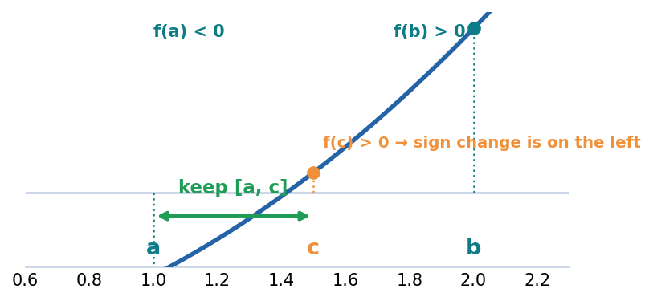
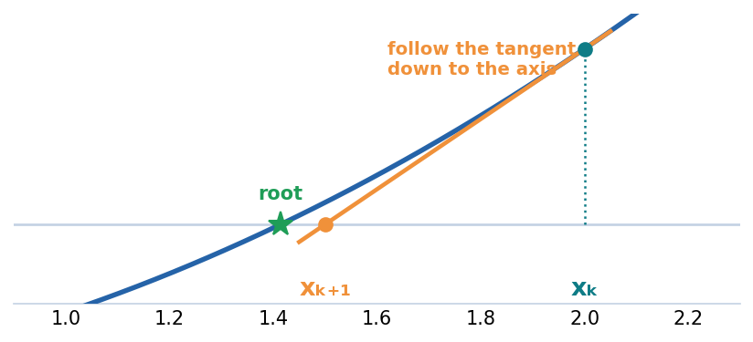
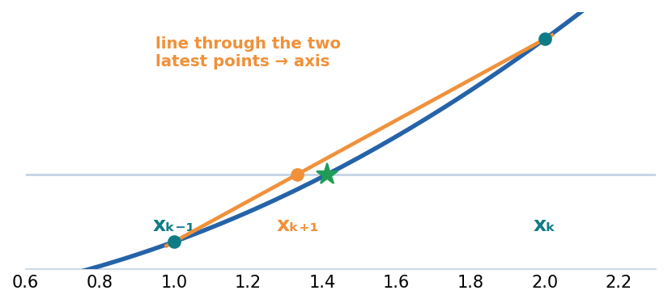

Linear & Non-linear Systems
Solve linear and non-linear systems of equations. We first find roots of a single non-linear equation (fixed-point, bisection, Newton, secant), then solve linear systems by Gaussian elimination and matrix factorization (LU, Cholesky).
Root finding: the problem
A great many problems reduce to finding the root of an equation: a value \(x\) for which
Graphically, a root is where the curve \(y=f(x)\) crosses the \(x\)-axis. For linear or simple quadratic \(f\) we can solve by hand. But for most non-linear equations — \(\cos x = x\), \(x^3 - 2x - 1 = 0\) — there is no closed-form solution, so we approximate the root with an iterative method: start from a guess, improve it repeatedly, and stop when the change is below a tolerance \(\varepsilon\).
The four methods below trade off robustness (will it converge?) against speed (how fast?).
2.1 Fixed-point iteration
First, where does \(x=g(x)\) come from? Take the equation you want to solve and rearrange it so a single \(x\) sits alone on the left. The right-hand side then becomes a rule \(g\). Feeding a guess through \(g\) again and again drives it to the answer:
Start with the picture. Rewrite \(f(x)=0\) as \(x=g(x)\). Then read the diagram below from top to bottom, along one vertical line:
So a solution is a fixed point — a value the map returns to itself, \(g(x^{*})=x^{*}\). We reach it by iterating
and stop when \(|x_{k+1}-x_k| < \varepsilon\). The link to the original problem is \(f(x) = g(x) - x\): where \(g(x)=x\), we have \(f(x)=0\).
The cobweb traces the iteration in the top picture: from \(x_k\) go up to the curve (its height is \(g(x_k)=x_{k+1}\)), then across to the line \(y=x\), and repeat. The stacked demo below animates this while keeping the shared vertical line, so you watch the cobweb close on the crossing and the dots close on the root at the same \(x\).
Worked example
Solve \(2x^3 - 2x - 5 = 0\). Rearrange to isolate \(x\):
Iterate \(x_{n+1}=g(x_n)\) from the initial value \(x_0=1.5\); stop when the error \(E_n=|x_{n+1}-x_n|<\varepsilon=10^{-4}\), or after at most 20 iterations:
| n | \(x_n\) | \(x_{n+1}=g(x_n)\) | \(E_n=|x_{n+1}-x_n|\) |
|---|---|---|---|
| 0 | 1.5000 | 1.5874 | 0.0874 |
| 1 | 1.5874 | 1.5989 | 0.0115 |
| 2 | 1.5989 | 1.6004 | 0.0015 |
| 3 | 1.6004 | 1.6006 | 0.0002 |
| 4 | 1.6006 | 1.6006 | 0.00003 < ε ✓ |
The error shrinks by ≈ \(|g'(x^{*})|\approx0.13\) each step and drops below \(\varepsilon\) at \(n=4\): root \(x \approx 1.6006\).
n=0 x=1.50000 g(x)=1.58740 err=0.08740 n=1 x=1.58740 g(x)=1.59888 err=0.01148 n=2 x=1.59888 g(x)=1.60037 err=0.00150 n=3 x=1.60037 g(x)=1.60057 err=0.00019 n=4 x=1.60057 g(x)=1.60059 err=0.00003 self-written fixed point = 1.600595 MATLAB fzero = 1.600599
fzero: 1.600599.
They agree to four decimals. The tiny gap is only the stopping rule: hand-work and the loop halt when \(E_n<10^{-4}\), whereas fzero drives \(f\) to machine precision.
Source: Root Finding lecture & Fixed_pont_iteration.m.
🎛 Demo: one iteration, two stacked views
Before pressing play, see what each move computes. One step of the cobweb is exactly two operations from the formula \(x_{k+1}=g(x_k)\):
Now play it. The two views share a single horizontal axis: the cobweb on \(y=g(x)\) sits directly above the root view \(y=f(x)=g(x)-x\), and a dashed green line links the crossing (top) to the zero (bottom) at the same \(x\). A teal line follows the current \(x_k\) through both; the arrowheads on each cobweb step show the ① up, ② across order. The green band is the convergence zone \(|g'(x)|<1\); the bottom strip colours every starting point \(x_0\) as converging (green) or diverging (red).
g(x)=x² and g(x)=√x — the same equation \(x^2-x=0\), yet the green basin (and which root you land on) flips. Then, with g(x)=x², drag \(x_0\) just past the edge of the green band and watch the iteration escape to infinity.2.1.1 Why it converges — and from where
click to expand
The slope test (local convergence)
Let \(x^{*}\) be a fixed point, so \(g(x^{*})=x^{*}\), and write the error after step \(k\) as \(e_k = x_k - x^{*}\). Expanding \(g\) about \(x^{*}\) with Taylor's theorem,
Each step multiplies the error by roughly \(g'(x^{*})\). Three consequences follow:
- If \(|g'(x^{*})| < 1\), the error shrinks — the fixed point is attracting and the iteration converges linearly with rate \(|g'(x^{*})|\).
- If \(|g'(x^{*})| > 1\), the error grows — the fixed point is repelling, and no starting guess (short of landing exactly on it) will converge to it.
- The sign of \(g'\) sets the shape: \(0 < g' < 1\) gives a monotone staircase; \(-1 < g' < 0\) gives the alternating in-spiral you see in the cobweb.
From where? The interval (contraction) condition
The slope test is local: it only promises convergence once you are near \(x^{*}\). To know which starting values \(x_0\) are guaranteed to work, use the stronger interval condition.
The full set of starting points that eventually reach a given fixed point is its basin of attraction (the green region in the demo's bottom strip). The interval above is a guaranteed slice of that basin; the true basin is usually larger, and its edges are the repelling fixed points.
Worked analysis — the safe range for \(x_0\)
Take \(x^3 - x - 1 = 0\) with \(g(x)=(x+1)^{1/3}\) (root \(x^{*}\approx 1.3247\)). Differentiate and impose the slope test:
So \(|g'|<1\) everywhere except the thin band \(-1.19 < x < -0.81\). Because the cube root contracts so strongly, the basin is in fact the entire real line — any \(x_0\) converges to \(1.3247\). Starting from \(x_0=1\):
| \(k\) | \(x_k\) | \(g(x_k)\) | error \(|x_{k+1}-x_k|\) |
|---|---|---|---|
| 0 | 1.000000 | 1.259921 | 0.259921 |
| 1 | 1.259921 | 1.312294 | 0.052373 |
| 2 | 1.312294 | 1.322354 | 0.010060 |
| 3 | 1.322354 | 1.324269 | 0.001915 |
| 4 | 1.324269 | 1.324633 | 0.000364 |
| 5 | 1.324633 | 1.324702 | 0.000069 ✓ |
Notice the error falls by a factor of roughly \(0.19\) each step — exactly \(|g'(x^{*})|\), as predicted.
Which root do you get? Basins and the choice of \(g\)
A rearrangement makes some roots attracting and others repelling, so the choice of \(g\) decides which root you can reach — and from which starting points. Consider \(x^2 - x = 0\), with roots \(0\) and \(1\), and two natural rearrangements:
| Rearrangement | \(g'(0)\) | \(g'(1)\) | Attracting root | Safe range of \(x_0\) |
|---|---|---|---|---|
| \(x = x^2\) → \(g(x)=x^2\) | 0 | 2 | \(x^{*}=0\) | \(-1 < x_0 < 1\) |
| \(x = \sqrt{x}\) → \(g(x)=\sqrt{x}\) | \(\infty\) | 0.5 | \(x^{*}=1\) | \(x_0 > 0\) |
The art of choosing \(g\)
One equation can be rearranged many ways; only those with \(|g'(x^{*})|<1\) at the target root will converge. For \(2x^3 - 2x - 5 = 0\) (real root \(x^{*}\approx 1.6006\)):
| Rearrangement \(x=g(x)\) | \(|g'(x^{*})|\) | Verdict |
|---|---|---|
| \(x = \bigl(x + \tfrac{5}{2}\bigr)^{1/3}\) | ≈ 0.13 | ✓ converges (fast) |
| \(x = x^3 - \tfrac{5}{2}\) | ≈ 7.69 | ✗ diverges |
| \(x = \dfrac{5}{\,2x^2 - 2\,}\) | ≈ 3.28 | ✗ diverges |
- Solve \(x^3-x-1=0\) by fixed-point iteration with \(g(x)=(x+1)^{1/3}\), \(x_0=1\).
- Max 5 iterations; 3 decimals; stop when \(E_n=|x_{n+1}-x_n| < \varepsilon = 0.005\).
Reveal answer
| n | \(x_n\) | \(x_{n+1}=g(x_n)\) | \(E_n\) | \(E_n<\varepsilon?\) |
|---|---|---|---|---|
| 0 | 1.000 | 1.260 | 0.260 | no |
| 1 | 1.260 | 1.312 | 0.052 | no |
| 2 | 1.312 | 1.322 | 0.010 | no |
| 3 | 1.322 | 1.324 | 0.002 | ✓ stop |
2.2 Bisection — the reliable bracket method

0; the midpoint c splits it and the half containing the sign change is kept.">- Need a bracket: \(f(a)\,f(b) < 0\) (opposite signs ⇒ a root lies between).
- Cut at the midpoint, keep the half that still changes sign, repeat.
- Error after \(n\) cuts \(\le \dfrac{b-a}{2^{n}}\) (one binary digit per step).
Worked example
Bracket the root of \(f(x)=x^2-2\) in the initial interval \([a,b]=[1,2]\); halve until the error bound \(E_n=\tfrac{b-a}{2}<\varepsilon=0.01\), or after at most 20 iterations:
| n | \(a\) | \(b\) | \(c=\tfrac{a+b}{2}\) | \(f(c)\) | keep | \(E_n=\tfrac{b-a}{2}\) |
|---|---|---|---|---|---|---|
| 1 | 1.000 | 2.000 | 1.500 | +0.250 | [a, c] | 0.500 |
| 2 | 1.000 | 1.500 | 1.250 | −0.438 | [c, b] | 0.250 |
| 3 | 1.250 | 1.500 | 1.375 | −0.109 | [c, b] | 0.125 |
| 4 | 1.375 | 1.500 | 1.438 | +0.066 | [a, c] | 0.063 |
| 5 | 1.375 | 1.438 | 1.406 | −0.022 | [c, b] | 0.031 |
| 6 | 1.406 | 1.438 | 1.422 | +0.022 | [a, c] | 0.016 |
| 7 | 1.406 | 1.422 | 1.414 | −0.000 | [c, b] | 0.008 < ε ✓ |
The bracket halves each step. After 7 halvings the error bound is 0.008 and \(x \approx 1.414\) (true \(\sqrt2 = 1.41421\)) — slower than fixed-point, but it can never fail.
n=0 a=1.0000 b=2.0000 c=1.5000 f(c)=+0.2500 err=0.5000 n=1 a=1.0000 b=1.5000 c=1.2500 f(c)=-0.4375 err=0.2500 n=2 a=1.2500 b=1.5000 c=1.3750 f(c)=-0.1094 err=0.1250 n=3 a=1.3750 b=1.5000 c=1.4375 f(c)=+0.0664 err=0.0625 n=4 a=1.3750 b=1.4375 c=1.4062 f(c)=-0.0225 err=0.0312 n=5 a=1.4062 b=1.4375 c=1.4219 f(c)=+0.0217 err=0.0156 n=6 a=1.4062 b=1.4219 c=1.4141 f(c)=-0.0004 err=0.0078 n=7 a=1.4141 b=1.4219 c=1.4180 f(c)=+0.0106 err=0.0039 n=8 a=1.4141 b=1.4180 c=1.4160 f(c)=+0.0051 err=0.0020 n=9 a=1.4141 b=1.4160 c=1.4150 f(c)=+0.0023 err=0.0010 n=10 a=1.4141 b=1.4150 c=1.4146 f(c)=+0.0010 err=0.0005 n=11 a=1.4141 b=1.4146 c=1.4143 f(c)=+0.0003 err=0.0002 n=12 a=1.4141 b=1.4143 c=1.4142 f(c)=-0.0001 err=0.0001 self-written bisection = 1.414246 MATLAB fzero = 1.414214
fzero: 1.414214.
All bracket \(\sqrt2=1.41421\). Bisection is slow — the hand-work stops after 7 halvings (error ≤ 0.008), the program needs 13, and only the digits guaranteed by the error bound are trustworthy.
Source: Bisection.m (Lab 4 solutions).
- Solve \(f(x)=x^2-2=0\) on \([1,2]\) by bisection.
- Max 5 iterations; 3 decimals; error bound \(E_n=\tfrac{b-a}{2}\); stop when \(E_n < \varepsilon = 0.05\).
Reveal answer
| n | \(a\) | \(b\) | \(c=\frac{a+b}{2}\) | \(f(c)\) | keep | \(E_n=\frac{b-a}{2}\) |
|---|---|---|---|---|---|---|
| 1 | 1.000 | 2.000 | 1.500 | +0.250 | [a, c] | 0.500 |
| 2 | 1.000 | 1.500 | 1.250 | −0.438 | [c, b] | 0.250 |
| 3 | 1.250 | 1.500 | 1.375 | −0.109 | [c, b] | 0.125 |
| 4 | 1.375 | 1.500 | 1.438 | +0.066 | [a, c] | 0.063 |
| 5 | 1.375 | 1.438 | 1.406 | −0.022 | [c, b] | 0.031 ✓ |
🎛 Demo: watch bisection bracket a root
The shaded band is the current bracket \([a,b]\). Each step halves it and keeps the half where the sign changes. Press Step to advance one iteration, or Auto to run.
2.3 Newton's method

- At \(x_k\), follow the tangent of \(y=f(x)\) down to the \(x\)-axis → that landing point is \(x_{k+1}\).
- Needs the derivative \(f'\) and a decent start, but converges quadratically (correct digits ≈ double each step).
Worked example
Solve \(\cos x - x = 0\) from the initial value \(x_0 = \pi/4 \approx 0.785398\), with \(f'(x) = -\sin x - 1\); stop when \(E_n=|x_{n+1}-x_n|<\varepsilon=10^{-6}\), or after at most 20 iterations:
| n | \(x_n\) | \(f(x_n)\) | \(f'(x_n)\) | \(x_{n+1}\) | \(E_n=|x_{n+1}-x_n|\) |
|---|---|---|---|---|---|
| 0 | 0.785398 | −0.078291 | −1.707107 | 0.739536 | 0.045862 |
| 1 | 0.739536 | −0.000755 | −1.673945 | 0.739085 | 0.000451 |
| 2 | 0.739085 | −0.000000 | −1.673612 | 0.739085 | 0.0000002 < ε ✓ |
The error is squared each step (quadratic convergence): \(0.046 \to 0.00045 \to 10^{-7}\). Three steps reach \(x \approx 0.739085\) — far faster than bisection.
n=0 x=0.785398 f=-0.078291 err=0.045862 n=1 x=0.739536 f=-0.000755 err=0.000451 n=2 x=0.739085 f=-0.000000 err=0.000000 self-written Newton = 0.739085 MATLAB fzero = 0.739085
fzero all give \(x \approx 0.739085\) — here they match to six decimals, because Newton reaches machine precision in just three steps.- Solve \(f(x)=x^2-2=0\) by Newton from \(x_0=2\).
- Max 5 iterations; 3 decimals; stop when \(E_n=|x_{n+1}-x_n| < \varepsilon = 0.001\).
Reveal answer
| n | \(x_n\) | \(f(x_n)\) | \(f'(x_n)\) | \(x_{n+1}\) | \(E_n\) |
|---|---|---|---|---|---|
| 0 | 2.000 | 2.000 | 4.000 | 1.500 | 0.500 |
| 1 | 1.500 | 0.250 | 3.000 | 1.417 | 0.083 |
| 2 | 1.417 | 0.007 | 2.833 | 1.414 | 0.003 |
| 3 | 1.414 | 0.000 | 2.828 | 1.414 | 0.000 ✓ |
🎛 Demo: Newton's tangent leaps
Choose a function and a starting point \(x_0\). Each step draws the tangent (orange) and drops to the \(x\)-axis to get the next guess. Notice how quickly the steps shrink.
2.4 The secant method

- Newton's tangent, but the slope comes from the two latest points — no derivative needed.
- Needs two starting guesses; converges superlinearly (order ≈ 1.618) — between bisection and Newton.
Worked example
Solve \(f(x)=x^2-2\) from the two initial values \(x_0=1,\ x_1=2\); each step uses the two latest points. Stop when \(E_k=|x_k-x_{k-1}|<\varepsilon=10^{-3}\), or after at most 20 iterations:
| k | \(x_k\) | \(f(x_k)\) | \(E_k=|x_k-x_{k-1}|\) |
|---|---|---|---|
| 0 | 1.000 | −1.000 | — |
| 1 | 2.000 | +2.000 | — |
| 2 | 1.333 | −0.222 | 0.6667 |
| 3 | 1.400 | −0.040 | 0.0667 |
| 4 | 1.415 | +0.001 | 0.0146 |
| 5 | 1.414 | −0.000 | 0.0004 < ε ✓ |
Superlinear: fewer steps than bisection, and no derivative needed. Root \(x \approx 1.414\).
x2 = 1.3333 f = -0.2222 err = 0.6667 x3 = 1.4000 f = -0.0400 err = 0.0667 x4 = 1.4146 f = +0.0012 err = 0.0146 x5 = 1.4142 f = -0.0000 err = 0.0004 self-written secant = 1.414211 MATLAB fzero = 1.414214
fzero (1.414214) agree to five decimals — the secant method reaches four correct digits in four steps, with no derivative.- Solve \(f(x)=x^2-2=0\) by the secant method with \(x_0=1,\ x_1=2\).
- Max 5 iterations; 3 decimals; stop when \(E_n=|x_n-x_{n-1}| < \varepsilon = 0.001\).
Reveal answer
| n | \(x_n\) | \(f(x_n)\) | \(E_n=|x_n-x_{n-1}|\) |
|---|---|---|---|
| 0 | 1.000 | −1.000 | — |
| 1 | 2.000 | +2.000 | — |
| 2 | 1.333 | −0.222 | 0.667 |
| 3 | 1.400 | −0.040 | 0.067 |
| 4 | 1.415 | +0.001 | 0.015 |
| 5 | 1.414 | −0.000 | 0.000 ✓ |
🎛 Demo: the secant sweep
The secant method draws a straight line through the two most recent points on the curve and takes its \(x\)-intercept as the next guess. Watch each secant line (orange) pivot toward the root — no derivative required.
2.5 Choosing a method · polynomial roots
| Method | Needs | Convergence | Guaranteed? |
|---|---|---|---|
| Bisection | bracket [a,b] | linear | ✅ yes (if sign change) |
| Fixed-point | good \(g(x)\) | linear | only if \(|g'|<1\) |
| Newton | \(f'\) + guess | quadratic | no |
| Secant | two guesses | superlinear (~1.62) | no |
fzero) does internally.Roots of polynomials
For polynomials, MATLAB finds all roots at once from the coefficient vector with roots:
r =
1.6006 + 0.0000i
-0.8003 + 0.9599i
-0.8003 - 0.9599i
x =
0.73912.6 Solving linear systems: Gaussian elimination
Now we turn from one equation to systems \(A\mathbf{x} = \mathbf{b}\). Gaussian elimination is the workhorse direct method. It uses three elementary row operations — swapping rows, scaling a row by a nonzero constant, and adding a multiple of one row to another — to transform the augmented matrix \([A\,|\,\mathbf{b}]\) into row-echelon (upper-triangular) form.
- Forward elimination: introduce zeros below each pivot, column by column, until the system is upper triangular.
- Back substitution: solve the last equation for the last unknown, then work upward.
Worked example
Find the parabola \(y = ax^2 + bx + c\) through \((3,25)\), \((1,5)\), \((-2,20)\). Substituting the points gives a \(3\times3\) system; elimination + back-substitution yields
Solution vector X =
0.9050
1.5962
2.2025
2.9591\ does this automatically.Source: Gaussian Elimination lecture & Gausssian_Elimination.m.
🎛 Demo: forward elimination, row by row
Follow the augmented matrix \([A\,|\,\mathbf b]\) as it is driven to upper-triangular form. Each step picks a pivot, computes the multiplier \(m = a_{ik}/a_{kk}\) for a row below it, and subtracts \(m\times(\text{pivot row})\) to plant a zero under the pivot. Press Step to do one row operation.
2.7 LU factorization
LU decomposition factors a square matrix into a lower-triangular \(L\) (ones on the diagonal) times an upper-triangular \(U\):
This is Gaussian elimination's bookkeeping made reusable. Once you have \(L\) and \(U\), solving \(A\mathbf{x}=\mathbf{b}\) is two cheap triangular solves:
Solution x =
1
2
-1Source: LU Factorization lecture (slides).
2.8 Cholesky factorization
When \(A\) is symmetric and positive definite (all eigenvalues positive), it has a special, cheaper factorization into a lower-triangular matrix times its own transpose:
Cholesky is about twice as fast as LU and numerically very stable — the method of choice for the symmetric positive-definite systems that arise in least-squares (Module 3) and many engineering problems. Solving uses the same two-step idea:
Worked example
Solve the symmetric system
Solution x =
1
1
1chol errors, \(A\) is not positive definite — fall back to LU.Source: Cholesky Factorization lecture (slides).
More practice examples
One example per topic (2.1–2.8). The four root-finding methods (2.1–2.4) show the complete process — every iteration with the error \(E_n\) compared against the tolerance \(\varepsilon\) — each with its initial value(s), tolerance, and a maximum iteration count stated up front.
Reveal answer
| n | \(x_n\) | \(x_{n+1}=g(x_n)\) | \(E_n=|x_{n+1}-x_n|\) | \(E_n<\varepsilon?\) |
|---|---|---|---|---|
| 0 | 1.000 | 2.000 | 1.000 | no |
| 1 | 2.000 | 1.750 | 0.250 | no |
| 2 | 1.750 | 1.732 | 0.018 | no |
| 3 | 1.732 | 1.732 | 0.000 | ✓ stop |
Reveal answer
| n | a | b | c | f(c) | \(E_n=\tfrac{b-a}{2}\) | \(E_n<\varepsilon?\) |
|---|---|---|---|---|---|---|
| 0 | 1.000 | 2.000 | 1.500 | +0.250 | 0.500 | no |
| 1 | 1.000 | 1.500 | 1.250 | −0.438 | 0.250 | no |
| 2 | 1.250 | 1.500 | 1.375 | −0.109 | 0.125 | no |
| 3 | 1.375 | 1.500 | 1.438 | +0.066 | 0.063 | no |
| 4 | 1.375 | 1.438 | 1.406 | −0.023 | 0.031 | ✓ stop |
Reveal answer
| n | \(x_n\) | \(f(x_n)\) | \(x_{n+1}\) | \(E_n=|x_{n+1}-x_n|\) | \(E_n<\varepsilon?\) |
|---|---|---|---|---|---|
| 0 | 1.0000 | −1.0000 | 1.5000 | 0.5000 | no |
| 1 | 1.5000 | +0.2500 | 1.4167 | 0.0833 | no |
| 2 | 1.4167 | +0.0069 | 1.4142 | 0.0025 | no |
| 3 | 1.4142 | +0.0000 | 1.4142 | 0.0000 | ✓ stop |
Reveal answer
| k | \(x_k\) | \(f(x_k)\) | \(E_k=|x_k-x_{k-1}|\) | \(E_k<\varepsilon?\) |
|---|---|---|---|---|
| 0 | 1.0000 | −1.0000 | — | — |
| 1 | 2.0000 | +2.0000 | — | — |
| 2 | 1.3333 | −0.2222 | 0.6667 | no |
| 3 | 1.4000 | −0.0400 | 0.0667 | no |
| 4 | 1.4146 | +0.0012 | 0.0146 | no |
| 5 | 1.4142 | −0.0000 | 0.0004 | ✓ stop |
Reveal answer
Convergence order: bisection 1 (linear) · fixed-point ≤ 1 (conditional) · secant ≈ 1.618 · Newton 2 (fastest, but needs \(f'\) and a good start). robust solvers bracket with bisection, then finish with Newton/secant — as MATLAB's
fzero does
Reveal answer
\(R_3\leftarrow R_3+R_1:\ (0,\ 6,-2\,|\ 6)\)
\(R_3\leftarrow R_3+3R_2:\ (0,0,-5\,|\,-15)\ \Rightarrow\ z=3\)
back-substitute: \(-2y-3=-7\Rightarrow y=2;\quad 2x+6-3=5\Rightarrow x=1\) (x, y, z) = (1, 2, 3) — check with MATLAB: A\b gives the same
Reveal answer
\(L\mathbf{y}=\mathbf{b}\) (forward), then \(U\mathbf{x}=\mathbf{y}\) (backward). the expensive factorization is done once; only the two solves repeat
Reveal answer
It is ≈ twice as fast as LU and very stable. If
chol errors, A is not positive definite → fall back to LU.
symmetric + positive definite ⇒ Cholesky